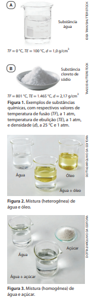
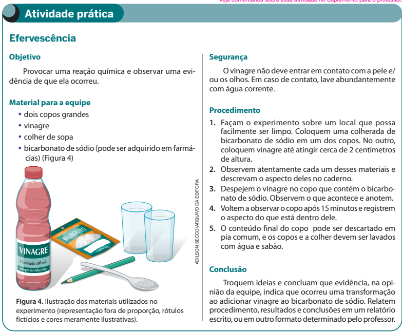
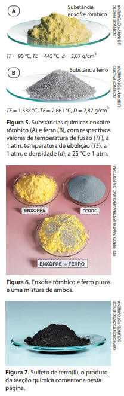
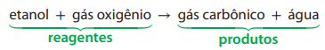
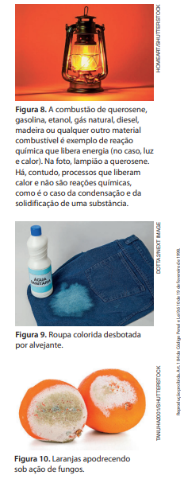
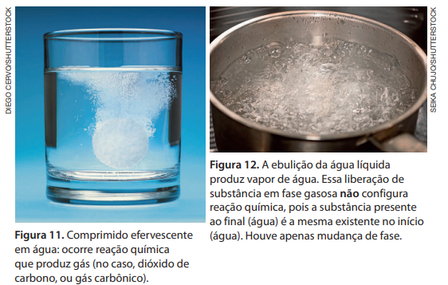

Substâncias químicas e misturas
Uma substância química é uma porção de matéria que tem propriedades bem definidas que lhe são características. Entre essas propriedades estão a temperatura de fusão (TF), a temperatura de ebulição (TE), a densidade (d), a inflamabilidade, a cor etc. Duas substâncias diferentes podem, eventualmente, possuir algumas propriedades iguais, mas nunca todas elas.
A 25 °C e 1 atm, a água (Fig. 1.A) apresenta densidade 1,0 g/cm3 e o cloreto de sódio (Fig. 1.B, principal constituinte do sal de cozinha), 2,17 g/cm3 . Ao acrescentar cloreto de sódio à água e mexer, obtém -se uma mistura cuja densidade é diferente das substâncias puras. Verifica -se experimentalmente que uma mistura de água e cloreto de sódio, colocada em um congelador, a 1 atm, não congela a 0 °C, mas inicia seu congelamento abaixo de 0 °C (o valor exato depende do teor de sal), e a temperatura não permanece constante durante o congelamento, diminuindo gradualmente. Quando aquecida, a 1 atm, essa mistura não entra em ebulição a 100 °C. A transição de fase se inicia acima de 100 °C (o valor exato depende do teor de sal), e a temperatura aumenta progressivamente durante a ocorrência da ebulição.
Uma substância pura, como o próprio nome diz, está pura, ou seja, não está misturada com uma ou mais substâncias diferentes. Em geral, quando um químico remete à substância água, por exemplo, ele está deixando subentendido que se refere à substância pura água.
Já uma mistura é formada por duas ou mais substâncias que, a partir do momento em que são misturadas, deixam de ser consideradas puras. Elas passam a ser componentes da mistura. Diferentemente das substâncias puras, as misturas não apresentam propriedades bem definidas, pois suas características dependem de fatores como a proporção de seus componentes.
Podemos chamar de fase uma porção de uma amostra de matéria que apresenta as mesmas propriedades em toda a sua extensão. Uma fase pode apresentar-se contínua ou fragmentada em várias partes.
Considere o caso da mistura de óleo e água (Figura 2). Trata-se de uma mistura heterogênea, na qual uma fase é óleo e a outra fase é água. Nesse exemplo, ambas as fases são contínuas.
Em uma mistura heterogênea constituída de grafite triturado e giz escolar triturado, os grãozinhos de grafite constituem uma fase, e os grãozinhos de giz constituem outra fase. Diferentemente da mistura de água e óleo, nesse caso cada fase apresenta-se fragmentada em muitas partes.
Por outro lado, uma mistura de água e açúcar na qual todo o açúcar tenha se dispersado na água (Fig. 3) é considerada uma mistura homogênea, termo empregado para expressar que, na mistura, existe uma só fase.

Conheça algumas terminologias muito usadas
Quando certa substância é misturada à água e isso resulta numa mistura homogênea, dizemos que a substância foi dissolvida na água e que a mistura obtida é uma solução aquosa. A água – que atua dissolvendo a substância – é denominada solvente, e a substância nela dissolvida é chamada de soluto. Em uma solução aquosa de sal, por exemplo, a água é o solvente, e o sal é o soluto. Quando dois líquidos formam mistura homogênea, dizemos que eles são miscíveis. A água e o álcool comum (etanol ou álcool etílico) são exemplos de líquidos miscíveis. Se, por outro lado, dois líquidos formam mistura heterogênea, dizemos que eles são imiscíveis. Esse é o caso da água e do óleo.

Reação (transformação) química
O experimento descrito permite a você realizar e observar um dos muitos exemplos de reação química. Uma substância (denominada ácido acético) presente no vinagre reage quimicamente com a substância chamada bicarbonato de sódio, produzindo novas substâncias. Uma dessas substâncias produzidas é um gás (chamado dióxido de carbono, ou gás carbônico), cujo desprendimento pode ser observado (a evidência visual são as bolhas formadas) ao realizar o experimento.
Os cientistas dão muita atenção ao estudo das transformações, isto é, alterações ou modificações de qualquer natureza. Para perceber que uma transformação ocorreu, escolhem um sistema e o observam no transcorrer do tempo. Um sistema é uma porção de matéria que foi escolhida para ser estudada, ob-servada. Um sistema pode ser constituído por uma substância pura ou por uma mistura de substâncias.
Para verificar a ocorrência de transformação num sistema, é necessário descrevê-lo em instantes diferentes. Ao fazer o experimento descrito anteriormente, você observou um mesmo sistema antes e depois de uma transformação que envolveu o bicarbonato de sódio e o ácido acético presente no vinagre. Quando consideramos duas observações de um sistema, feitas em instantes diferentes, dizemos que a primeira se refere ao estado inicial do sistema e a segunda, ao estado final do sistema.
Se uma ou mais substâncias, presentes no estado inicial de um sistema, transformam-se em uma ou mais substâncias diferentes, que estarão presentes no estado final, a transformação é uma reação química, ou transformação química.
Você pode estar se perguntando: como os químicos têm certeza de que uma reação química aconteceu? Bem, uma substância química é caracterizada por suas propriedades, tais como densidade, temperatura de fusão, temperatura de ebulição, cor, odor etc. Duas substâncias diferentes podem, eventual mente, ter algumas propriedades iguais, mas nunca todas elas. Para saber se ocorreu uma reação química, precisamos comparar as propriedades das substâncias presentes no sistema, nos estados inicial e final. Consideremos um exemplo.
Enxofre rômbico (Fig. 5.A) e ferro (Fig. 5.B) são caracterizados por suas propriedades; cada qual tem sua temperatura de fusão, densidade, cor etc. (Existe outra substância, chamada enxofre monoclínico, que tem algumas propriedades distintas das do enxofre rômbico, escolhido aqui como exemplo.) Uma característica interessante do ferro é que ele é atraído por um ímã. Já o enxofre rômbico não é. Se misturarmos os dois, pulverizados, obteremos uma mistura (Fig. 6) na qual cada um dos componentes mantém suas propriedades. Isso torna possível usar um ímã para separar o ferro da mistura. Verifica-se, assim, que a simples reunião de enxofre e ferro não causa sua transformação em uma nova substância, ou seja, não é um exemplo de reação química.
Contudo, se essa mistura for aquecida, em condições adequadas, ocorrerá um processo no qual enxofre rômbico e ferro se transformarão num sólido preto (Fig. 7). Determinando as propriedades desse sólido preto formado, é possível perceber que são distintas das propriedades do enxofre rômbico e do ferro. Ele apresenta temperatura de fusão 1.188 °C (a 1 atm), densidade 4,74 g/cm3 (a 25 °C e 1 atm) e não é atraído por um ímã. Trata -se de uma substância química diferente do enxofre rômbico e do ferro, que é denominada sulfeto de ferro(II).
Conforme mencionamos anteriormente, quando uma ou mais substâncias transformam -se em uma ou mais substâncias diferentes, essa transformação é denominada reação química, ou transformação química. Assim, se enxofre rômbico e ferro são aquecidos juntos, ocorre uma reação química, que pode ser assim representada:
enxofre rômbico + ferro → sulfeto de ferro(II)
Nessa representação, o sinal de mais (+) significa “e”, e a seta (→) pode ser entendida como “reagem quimicamente transformando -se em”, ou, simplesmente, “transformam -se em“. Portanto, está representado que enxofre rômbico e ferro transformam -se em sulfeto de ferro(II).

As substâncias inicialmente existentes e que se transformam em outras em uma reação química são denominadas reagentes, e as novas substâncias produzidas são chamadas produtos.
No exemplo em questão:
Outro exemplo de reação química é a combustão (queima) do etanol no motor de veículos que o utilizem como combustível. Para que ela ocorra, é necessária a presença de gás oxigênio (proveniente do ar). Ambas as substâncias (etanol e oxigênio) transformam -se, durante a combustão completa, em duas novas substâncias: água e dióxido de carbono, também conhecido como gás carbônico. Trata -se de uma reação química que pode ser assim representada:

Essa representação pode ser interpretada como: etanol e gás oxigênio transformam -se em gás carbônico e água.
Exemplos de reações químicas
Para saber se houve uma reação química, é necessário comparar as propriedades das substâncias presentes nas situações inicial e final. Considere, por exemplo, que uma lata de alumínio vazia seja amassada. A substância inicialmente presente, alumínio, possui exatamente as mesmas propriedades da substância existente no final, que também é alumínio. Como amassar a lata não acarretou a formação de novas substâncias, esse fenômeno não é uma reação química (podendo ser denominado transformação física). Quando um objeto cai, uma folha de papel é rasgada, uma porção de areia é misturada à água, um giz é esmagado até virar pó e um prego é fincado na madeira, estamos diante de outros exemplos que não são reações químicas.
Certificar -se de que uma reação química ocorreu nem sempre é simples. Às vezes, só é possível em laboratórios adequadamente equipados para separar componentes das misturas obtidas e determinar suas propriedades. Há algumas evidências que podem estar associadas à ocorrência de reações químicas, mas nem sempre estão. Consideremos alguns exemplos relevantes:
- Liberação de calor: as combustões são reações químicas e, quando ocorrem, há liberação de calor (Fig. 8). Contudo, quando vapor de água condensa ou água líquida solidifica, também há liberação de calor pela água, e esses processos são transições de fase, não reações químicas.
- Mudança de cor: quando um alvejante é derrubado em uma roupa colorida, há uma reação química que transforma o corante da roupa em uma substância incolor ou de coloração diferente da inicial (Figura 9). Contudo, se misturarmos tinta azul e tinta amarela, veremos a coloração verde, mas não há reação química entre as tintas, apenas sobreposição de suas cores.
- Mudança de odor: quando frutas, carnes e outros alimentos apodrecem, ocorrem reações químicas em que substâncias presentes nos alimentos se transformam em outras, de odor diferente do original (Figura 10). No entanto, quando você destampa um frasco de perfume, sente um odor não porque tenha havido reação química; aconteceu evaporação de parte do perfume, e o vapor chegou até o interior do seu nariz.
- Liberação de gás: ao jogar um comprimido efervescente em água, há uma reação química que produz gás carbônico (Fig. 11). Por outro lado, quando acontece a ebulição de uma substância, formam -se bolhas de vapor, mas não ocorre reação, e sim mudança de fase (Fig. 12).


Aplicando conhecimentos
1. Quando uma folha de papel queima, diz-se que está acontecendo uma reação química. Já quando uma folha de papel é rasgada, não está ocorrendo reação química. Explique a razão para a diferente classificação de ambos os processos.
2. Que motivos levam os químicos a classificar a deterioração dos alimentos como sendo uma reação química e o derretimento de um pedaço de gelo como não sendo uma reação química?
3. A obtenção do metal ferro a partir do minério de ferro chamado hematita é realizada nas indústrias siderúrgicas. Uma reação química que ocorre em fornos apropriados, nessas indústrias, pode ser assim equacionada:
hematita + monóxido de carbono → ferro + dióxido de carbono
Sobre esse processo e sua representação, responda:
- a. Qual é o significado dos sinais de mais (+)?
- b. Que significa a seta ( →)?
- c. Que substâncias são reagentes no processo?
- d. Que substâncias são produtos?
- e. Por que dizemos que o processo representado é uma transformação química?
4. Interprete a seguinte representação: carvão + oxigênio → gás carbônico
5. Interprete o texto e, a seguir, responda à pergunta.
Por meio das pinturas corporais, os indígenas carregam no corpo e no rosto a identidade cultural de sua comunidade. As pinturas são as marcas de muitas populações e são diferentes para cada ocasião. Feitas normalmente de elementos naturais, como urucum e jenipapo, as tinturas podem se manter na pele por dias. [...] As tinturas são preparadas de diferentes formas. Uma das mais conhecidas é feita com o jenipapo, que é retirado verde do pé e tem seu líquido extraído e, quando colocado em contato com a pele, se transforma em uma tinta preta. Algumas etnias utilizam a tinta à base de sementes de urucum, que dá uma coloração vermelha à pele; outras usam o calcário, que se encontra na terra, para obter a cor branca.
Fonte: FUNAI. Pinturas corporais indígenas carregam marcas de identidade cultural. Disponível em: https://www.gov.br/ funai/pt-br/assuntos/noticias/2022-02/pinturas-corporaisindigenas-carregam-marcas-de-identidade-cultural. Acesso em: 15 out. 2024.
Uma das colorações de pintura corporal indígena mencionadas no texto envolve uma reação química na qual um dos reagentes é o gás oxigênio do ar. Diga qual é essa coloração e mencione o trecho do texto que indica a ocorrência dessa reação química.
Indígena da etnia Mehinako com pintura corporal usando os corantes vermelho e preto comentados na atividade 5, como preparativo para o ritual do Kuarup. (Município de Gaúcha do Norte, MT, 2022.)
6. (Enem) Produtos de limpeza indevidamente guardados ou manipulados estão entre as principais causas de acidentes domésticos. Leia o relato de uma pessoa que perdeu o olfato por ter misturado água sanitária, amoníaco e sabão em pó para limpar o banheiro: A mistura ferveu e começou a sair uma fumaça asfixiante. Não conseguia respirar e meus olhos, nariz e garganta começaram a arder de maneira insuportável. Saí correndo à procura de uma janela aberta para poder voltar a respirar. O trecho destacado poderia ser reescrito, em linguagem científica, da seguinte forma:
- a. As substâncias químicas presentes nos produtos de limpeza evaporaram.
- b. Com a mistura química, houve produção de uma solução aquosa asfixiante.
- c. As substâncias sofreram transformações pelo contato com o oxigênio do ar.
- d. Com a mistura, houve transformação química que produziu rapidamente gases tóxicos.
- e. Com a mistura, houve transformação química, evidenciada pela dissolução de um sólido.
7. (Enem) Entre os procedimentos recomendados para reduzir acidentes com produtos de limpeza, aquele que deixou de ser cumprido, na situação discutida na questão anterior, foi:
- a. Não armazene produtos em embalagens de natureza e finalidade diferentes das originais.
- b. Leia atentamente os rótulos e evite fazer misturas cujos resultados sejam desconhecidos.
- c. Não armazene produtos de limpeza e substâncias químicas em locais próximos a alimentos.
- d. Verifique, nos rótulos das embalagens originais, todas as instruções para os primeiros socorros.
- e. Mantenha os produtos de limpeza em locais absolutamente seguros, fora do alcance de crianças.